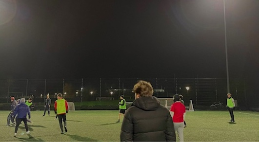

På dette site kan du finde billeder, relevant information og ikke mindst, videoen om Oliver og hans passion.
Vi er utrolig stolte af produktionen og vi håber du kan lide hvad du ser.
Vi har været ude og filme Oliver og hans fodboldhold. I den sammenhæng har vi taget en snak om rollen som træner og hvad han håber at kunne være for hans hold.
God fornøjelse med vores film: "Træneren".
Hjertelig velkommen til.
På dette site kan du finde billeder, relevant information og ikke mindst, videoen om Oliver og hans passion.
Vi er utrolig stolte af produktionen og vi håber du kan lide hvad du ser.
Vi har været ude og filme Oliver og hans fodboldhold. I den sammenhæng har vi taget en snak om rollen som træner og hvad han håber at kunne være for hans hold.
God fornøjelse med vores film: "Træneren".